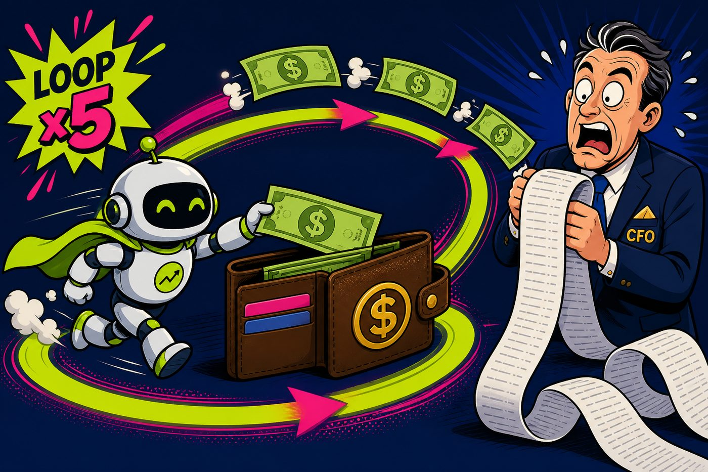

MGT 409 · Tokens → dollars, then match the model to the task
Tauhid Zaman · Yale SOM · Fall 2026
Lecture 11 was safety. Today is unit economics: list prices, a worked FAQ bill, prompt cache, then Luna vs Terra. Homework 6 Problems 5–7. Skip slide 2 in class.
| Min | Beat |
|---|---|
| 0–2 | Title. Safe agent, unpaid bill. |
| 2–5 | Last week vs this week — meter, not vibes. |
| 5–9 | Tokens → usage.csv. |
| 9–13 | July 30 list prices: Luna / Terra / Sol. |
| 13–19 | Worked FAQ: 800 in + 250 out, board arithmetic. |
| 19–22 | Hidden multipliers (steps, history, Fast). |
| 22–28 | Prompt cache (6 min): 0.1× read, 1.25× write, 30m TTL, 4k+200 table, prompt order. |
| 28–32 | CSMH 100 chats/day + mix. Cache as a P7 lever. |
| 32–35 | Earn the upgrade: luna_ok / needs_terra. |
| 35–38 | HW6 P5–P7. Blocked traffic is free. |
| 38–40 | Four things → vibe (~40 min). |
Do not linger on news cards. The two math beats are 13–19 and 22–28. Cut Q&A, not cache.
Injection, PII in logs, a refund nobody approved. The question is: how did this happen?
The same agent is polite and on-policy. It also looped 11 times on Sol Fast. The question is: who approved this bill?
A safe agent you cannot price is not a product. Today we put a meter on the loop.
response.usage √ó list price ‚Üí append usage.csv.If it is not in usage.csv, you cannot defend it. Homework 6 graders check the CSV against the brief.
Short-context list prices. OpenAI API pricing. Cached input is a separate column — two slides from now. Re-check if Portkey rates differ.
| Model | Per call | 1,000/day | 30 days | vs Luna |
|---|---|---|---|---|
| gpt-5.6-luna | $0.00046 | $0.46 | ~$14 | 1√ó |
| gpt-5.6-terra | $0.0046 | $4.60 | ~$138 | 10√ó |
| gpt-5.6-sol | $0.0115 | $11.50 | ~$345 | 25√ó |
Walk the Luna line on the board. Terra and Sol are 10× and 25× for the same 800+250 tokens. Output is 6× input — a chatty agent is a markup.

| Move | What it does to the bill |
|---|---|
| 5-step agent vs 1-shot FAQ | ~5√ó tokens, before retries |
| Unbounded chat history | Input grows every turn; old turns still bill |
| Dumping search JSON back in | You pay to re-read your own tools |
| Sol Fast mode (2× list) | Same model, skip-the-line surcharge — 0× extra IQ |
An 80% Luna cut is a gift. An 8-step agent on Sol Fast is how the gift disappears. Track $ per successful outcome, not $ per million tokens.
OpenAI name: prompt caching. If the API sees a long, identical prefix (system, tools JSON, static FAQ), those input tokens bill at a cached rate instead of full input. Output is never cached.
prompt_cache_options.ttl = 30m). Exact prefix match.cache_control): 5-min default at 1.25× write / 0.1× read; optional 1-hour write at 2×.Luna, input only. First turn writes the 4k system+FAQ prefix. Turns 2–N in the 30m window read it. Guest tokens stay uncached.
| Uncached every turn | With prompt cache | |
|---|---|---|
| Turn 1 | $0.00084 | $0.00104 (write 1.25× — slightly more) |
| Each later turn | $0.00084 | $0.00012 (read 0.1√ó on the 4k) |
| 10-turn session | $0.00840 | $0.00212 ≈ 4× cheaper |
System, tool schemas, static policy/FAQ. Same prompt_cache_key. Don’t reshuffle tools. Don’t put a UUID or timestamp at the top.
User turn, churny RAG, clocks. Multi-agent: share one frozen tool/policy prefix. Unique shuffled prompts = unique full bills.
First call pays the write. Reuse is the discount. HW6 P7: propose a frozen prefix — you do not have to build it.
HW6 Problem 7: monthly LLM opex at 100 queries/day = 3,000 calls. Same 800+250 shape as the worked FAQ.
| Architecture | Rough LLM opex / month | Note |
|---|---|---|
| All Luna, 1-shot | ~$1.40 | 3,000 √ó $0.00046 |
| All Terra | ~$14 | 10√ó Luna |
| All Sol | ~$35 | 25× Luna — still small until agents |
| 90% Luna / 10% Terra | ~$2.60 | Mix beats Sol everywhere |
| 5-step Terra agent | ~$70 | Same tokens √ó 5 steps (not $120 hand-waving) |
| Luna + prompt cache on a 10-turn thread | input ~4√ó cheaper | P7 lever: freeze the prefix |
FAQ chat is cheap. Agentic chat is the line item. Model mix + cache beat “Sol everywhere.”
HW6 Problem 6: every shipped query on gpt-5.6-luna and gpt-5.6-terra. Label luna_ok vs needs_terra. Totals in tokenomics.md must match usage.csv.
“Terra felt smarter” is not a reason. “Luna invented a refund policy” is a reason.
College Street Music Hall guest chat. Lecture 11 = don’t get hacked. Today = don’t fly blind on cost.
cost_log.py: log allowed calls only. Blocked junk never hits the API and never writes a CSV row.tokenomics.md totals = CSV.In-class vibe is the meter pattern, not the whole assignment. Screenshot one problem card later; do not paste the HW page into Codex.
Wire a real meter: usage.csv + Luna vs Terra on a tiny FAQ set.
This is the HW6 pattern — not the whole homework. Prompt cache is a P7 sentence, not a coding step today.
Next class: future directions — and your co-pilot. Bring a cost number, not a feeling.
Swipe or use buttons to advance ∑ projector icon for presentation